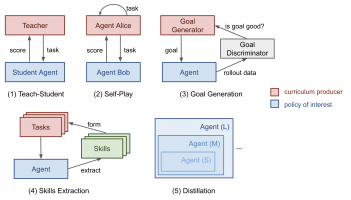

Also on lilianweng.github.io/lil-log
How to Train Really Large Models on …
How to train large and deep neural networks is challenging, as it …

Object Detection Part 4: Fast Detection …
Part 4 of the “Object Detection for Dummies” series focuses on …
Evolution Strategies
Gradient descent is not the only option when learning optimal model …
The Transformer Family
Inspired by recent progress on various enhanced versions of Transformer …
What are Diffusion Models?
Diffusion models are a new type of generative models that are flexible enough …

Curriculum for Reinforcement …
A curriculum is an efficient tool for humans to progressively learn from …
Contrastive Representation …
The main idea of contrastive learning is to learn representations such that …
Controllable Neural Text Generation
The modern langage model with SOTA results on many NLP tasks is trained on …